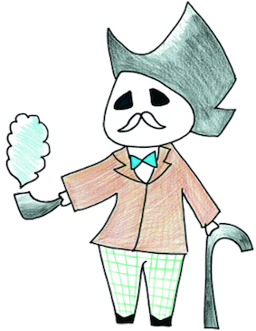

Ex祭ting!というテーマから、スピード感を出したいと思い、ロケットを描きました。空と宇宙の間でロケットが宇宙に飛び出していく場面です！
上の方の空の色と、下の日付の色を一緒にして統一感を出しました！ロケットの3色の色と旗の色も一緒にしました。
文字の白は雲のイメージです！飛行機雲で書いた文字のようなイメージで、文字を白にして、筆記体にしました。
同じイラスト漫画部ですが、決して姉妹ではありません！（笑）
洗足のイニシャルSGからS爺っていう名前にしよう！と考えました。女子校ではおじいちゃん先生が可愛がられる傾向があるのでちょうどいいな、って（笑）
ズボンの緑が洗足カラーなんです！
この割烹着を着たS爺です！文化祭パンフレットのどこかにいるのでぜひ探してみてください！


今年度文化祭ポスター
ポスターの製作者、伊藤友香さんにインタビュー！
Q.どのようなイメージでデザインしましたか？
Ex祭ting!というテーマから、スピード感を出したいと思い、
ロケットを描きました。
空と宇宙の間でロケットが宇宙に飛び出していく場面です！
Q.こだわったところはありますか？
上の方の空の色と、下の日付の色を一緒にして統一感を出しました！
ロケットの3色の色と旗の色も一緒にしました。
Q.大変だったことは何ですか？
文字の白は雲のイメージです！飛行機雲で書いた文字のような
イメージで、文字を白にして、筆記体にしました。
Q.S爺のクリエイターの伊藤さん(中3)とは姉妹ですか？（笑）
同じイラスト漫画部ですが、決して姉妹ではありません！（笑）
オリジナルキャラクターS爺
クリエイターの伊藤澪里さんにインタビュー！
Q.どのようなイメージでデザインしましたか？
洗足のイニシャルSGからS爺っていう名前にしよう！と考えました。
女子校ではおじいちゃん先生が可愛がられる傾向があるので
ちょうどいいな、って（笑）
Q.こだわったところはありますか？
ズボンの緑が洗足カラーなんです！
Q.文化祭パンフレットにはいろいろなタイプのS爺が登場しますが、お気に入りはどのS爺ですか？
この割烹着を着たS爺です！文化祭パンフレットのどこかにいるので
ぜひ探してみてください！